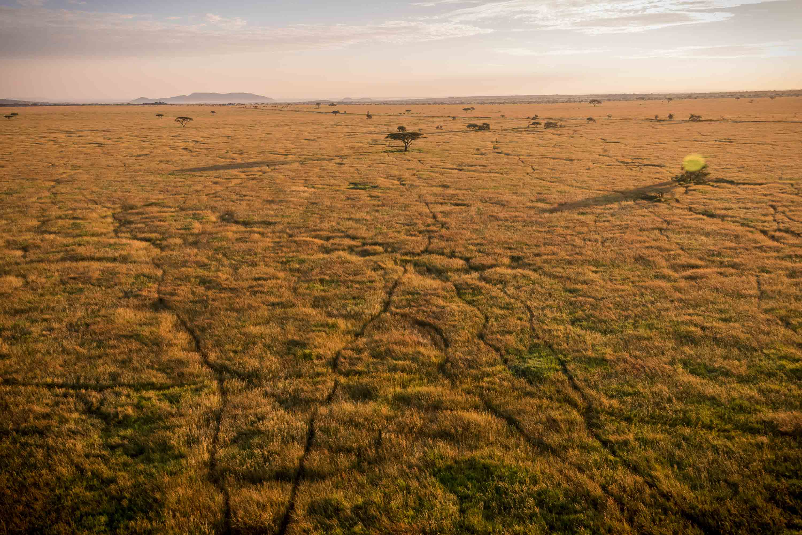

See how WildlifeLens is transforming wildlife research and conservation efforts around the world.
How we are helping identify cheetahs from biologist-taken images in the Serengeti.
Real-time AI identification in action
Benson Makungu, field biologist at the Wild Source discusses his job and how technology impacts it.
The Wild Source and the Big Cat Project needed to identify individual cheetahs from hundreds of images in an area that spanned hundreds of square miles. Manual identification was taking months and required expert knowledge.
We deployed WildlifeLens's advanced pattern recognition system, training it specifically on cheetah spot patterns and tail patterns from their existing database.
The implementation is improving research capabilities.
State-of-the-art computer vision and machine learning algorithms power our identification system.
Camera traps or field photos
Enhancement, autocropping, & feature detection
Pattern recognition & matching
ID with confidence scores and image for cross-referencing
Advanced preprocessing enhances image quality and autocrops key identifying features for analysis.
Deep learning models trained on hundreds of images recognize unique patterns with incredible accuracy.
Sophisticated algorithms compare spot patterns, stripes, and facial features against existing databases.
Confidence scoring, cross-referencing, and probability matching ensure reliable identification results.
Learn more about our founder and mission.